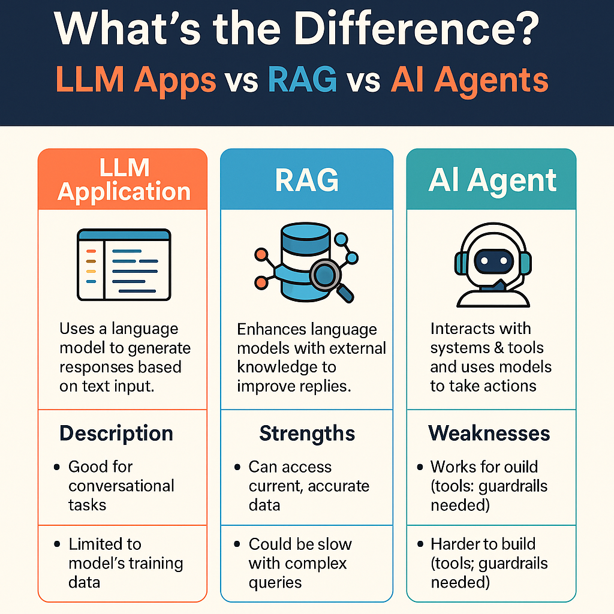
AI-TEAM
Software Architecture by Agent Responsibility
Conway's Law Applied to Agentic Software Engineering
Agentic Workflows
How coding agents work
LLMs vs RAG vs Agents
Examples of today's coding agents
Reflection Pattern
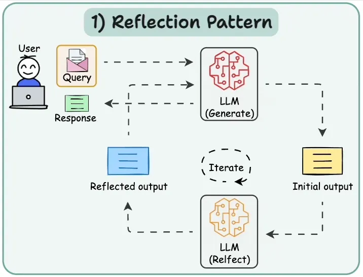
Tool Use Pattern
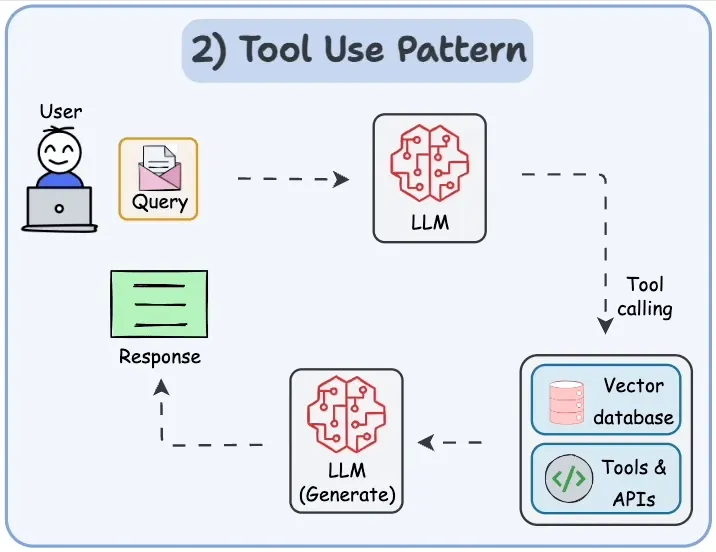
Reason and Act (ReAct)
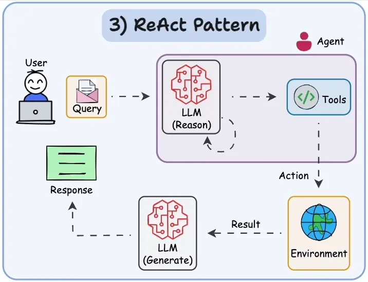
Planning Pattern
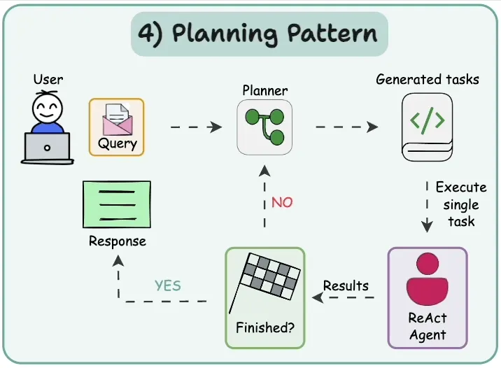
Agent in Action
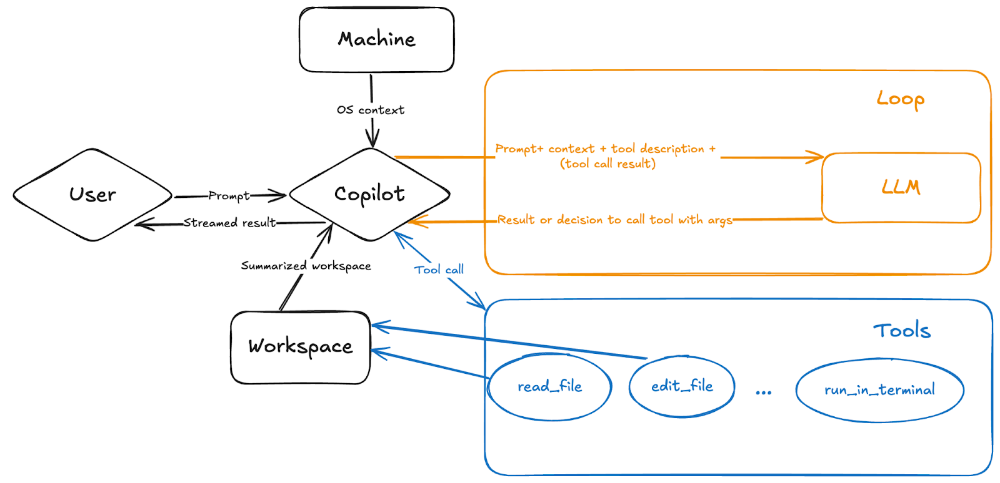
Skills
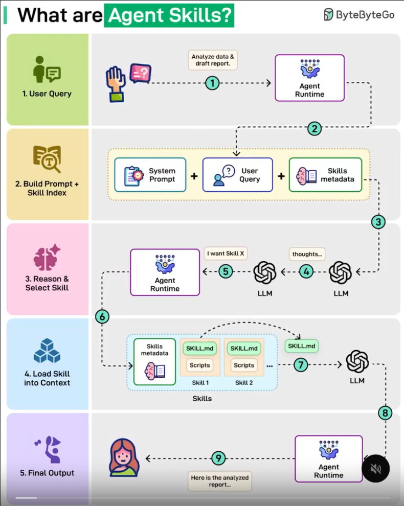
Context Window
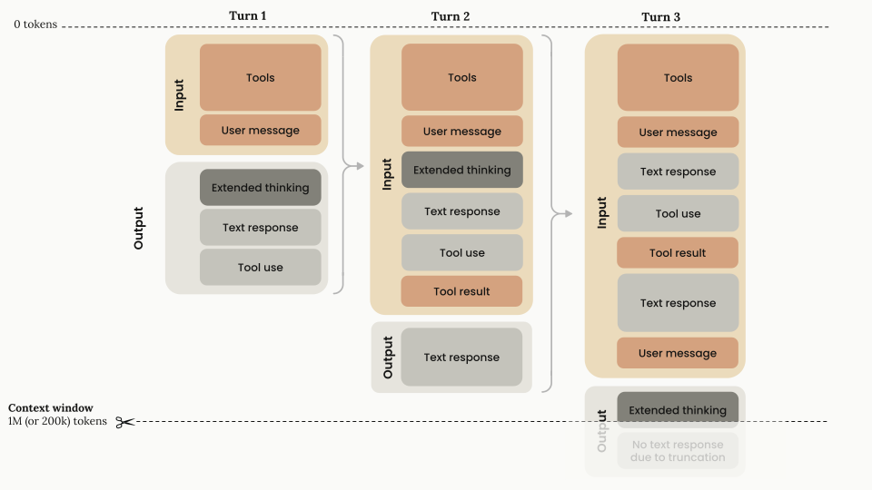
Larger context window = better?
Overload
Too much context overwhelms the model – focus is lost and response time increases.
Lost in the Middle
The model weighs the beginning and the end more heavily – relevant content in the middle gets overlooked.
Noise
More context leads to redundancy, contradictions, and distorted conclusions.
Long distances
As context grows, it becomes harder for the model to connect information that is far apart.
Context Window
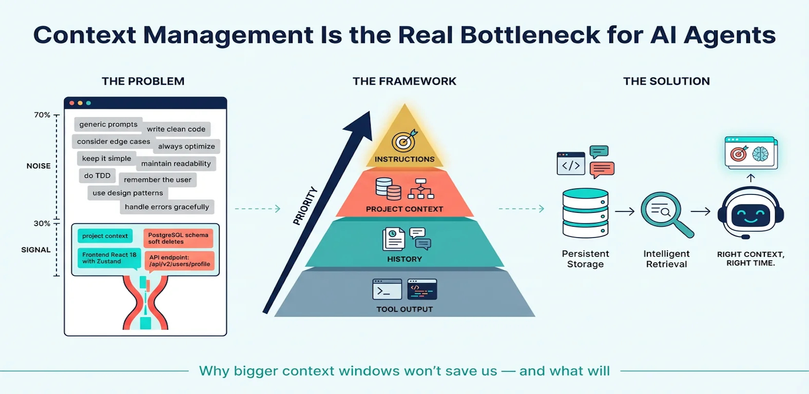
The problem
- One agent → one context window
- The entire project in a single context window? Opus can do everything! ;)
- Subagents?
- Lazy RAG?
- Context Compression?
🤔
How do we create focused agents?
Multi-Agent Pattern?
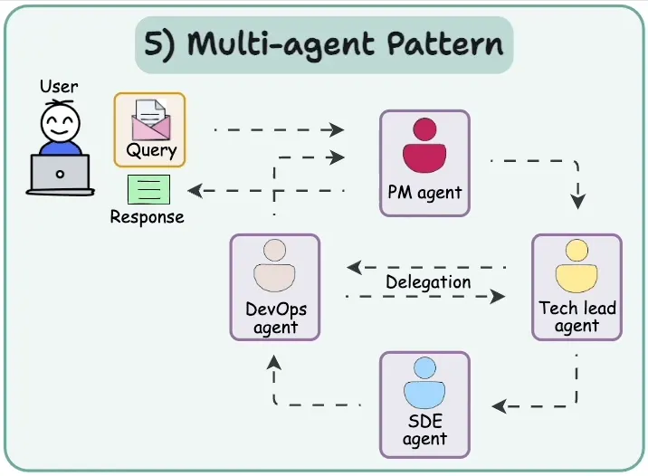
Conway's Law – Applied to AI
Organization shapes architecture
Conway's Law
Systems reflect the communication structure of their organization.
- clear structure → clear software
- chaotic structure → chaotic code
🤔
Does this also apply to coding agents?
AI-Team organizational chart
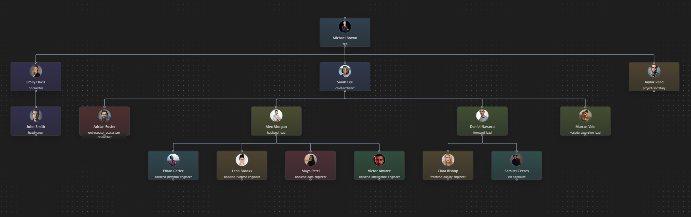
The organization of the AI-Team (a virtual team working on AI-Team!).
Clear responsibilities in organizations
- focus instead of overload
- clear responsibilities
- better communication
- higher quality
AI-Team creates a suitable agent structure
- clear boundaries in the virtual team
- clear boundaries in the code
- each agent knows its scope
AI-Team Team
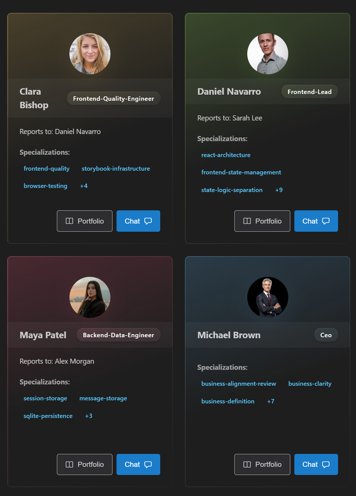
AI-Team Chat
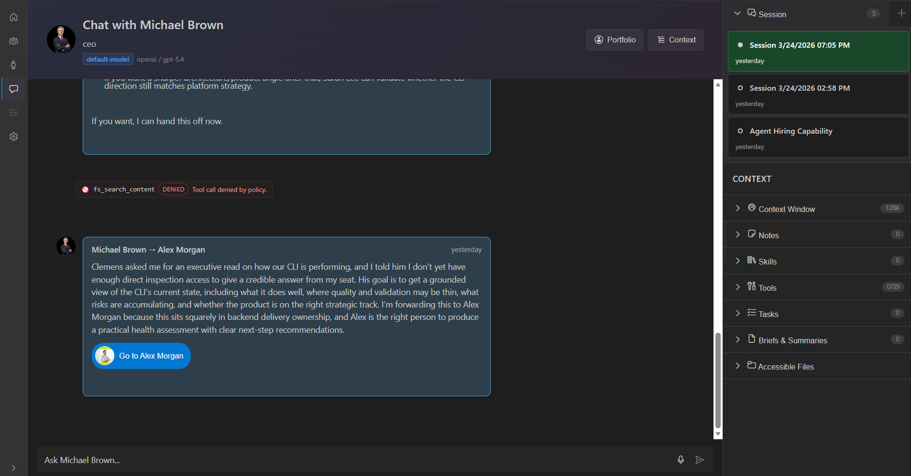
Change and optimization
- priorities change
- successful teams continuously optimize their structure
AI-Team optimizes the agent team
- calculates responsibilities
- measures the effectiveness of agents
- suggests better structures
- creates new agents when needed
Onboarding & Pair Programming
- New developers (the human kind) need orientation.
- Who knows what area best?
- Which tools fit my task?
AI-Team as navigator
- CSS specialists automatically get Playwright & Storybook
- Backend developers get DB tools & test runners
- A suitable pair programmer is assigned automatically
- Developers find their way immediately because they are automatically connected with the specialists.
Setup is tedious
- Prompts
- Tools
- Agent.md, Skill.md, instruction.md
- MCP
- Models
AI-Team makes it human-friendly
- „hire react specialist“
- „hire db expert“
- „hire backend lead“
The complexity stays under the hood.
AI-Team Portfolio
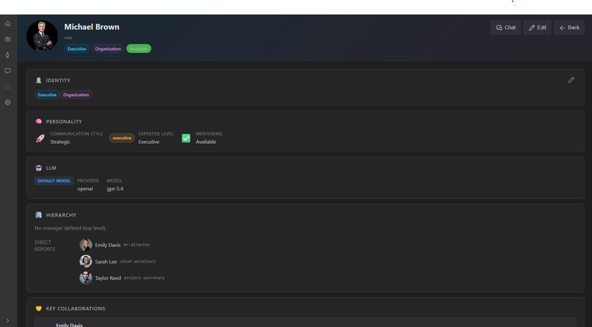
AI-Team Settings
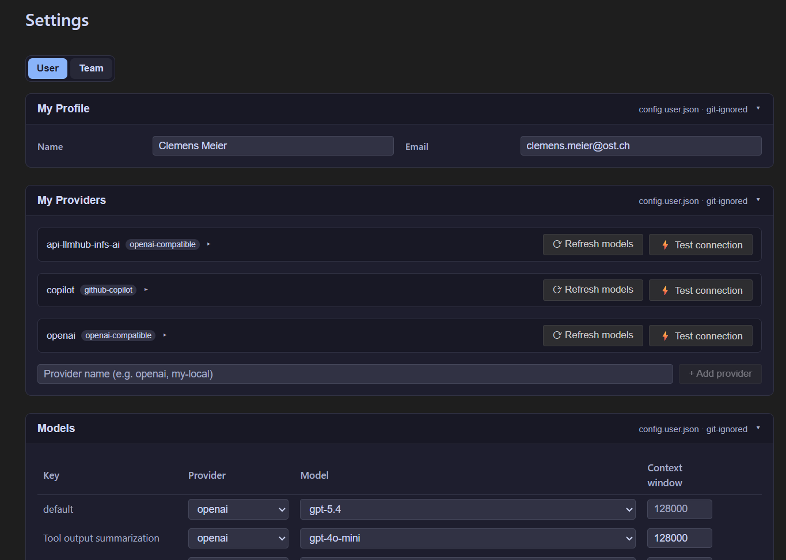
Copilot or Claude Code are data-hungry
- upload huge amounts of code to the cloud
- charge a lot of money for tokens
- create vendor lock-in through contracts
AI-Team:
- Open Source
- Bring Your Own Model
- Bring Your Own Provider
- Existing subscriptions can be used
Thesis
- today's agents are powerful – but poorly organized
- Context pollution does not decrease if you give the LLM 100 agents and 1000 skills
- Context cleanup is only necessary when context was not clean from the start.
- We need to bring structure to the agent landscape
- Structure creates quality
- Well-organized agents lead to good software architecture
- Conway's Law also applies to AI
AI-Team CLI
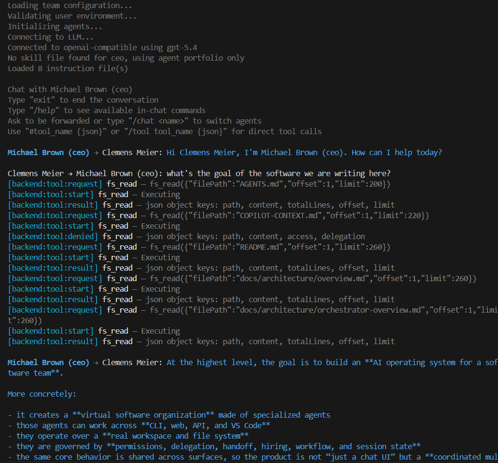
Links
Code:
-
AI Gitlab-OST
Repository (OST internal)
Attention! Heavy development and vibe-coding chaos ;) Pull requests are not accepted yet, but ideas are very welcome!
Workshops about Copilot:
-
Copilot Dev Days Online Workshop
Highly recommended for anyone who wants to dive deeper into how Copilot works. It offers many practical exercises and examples to help you make the most of Copilot's capabilities.
A GitHub Academic License (free for OST students with a scanned student ID) is required to complete all exercises, but it is definitely worth it! - Next Level GitHub Copilot (interesting website)